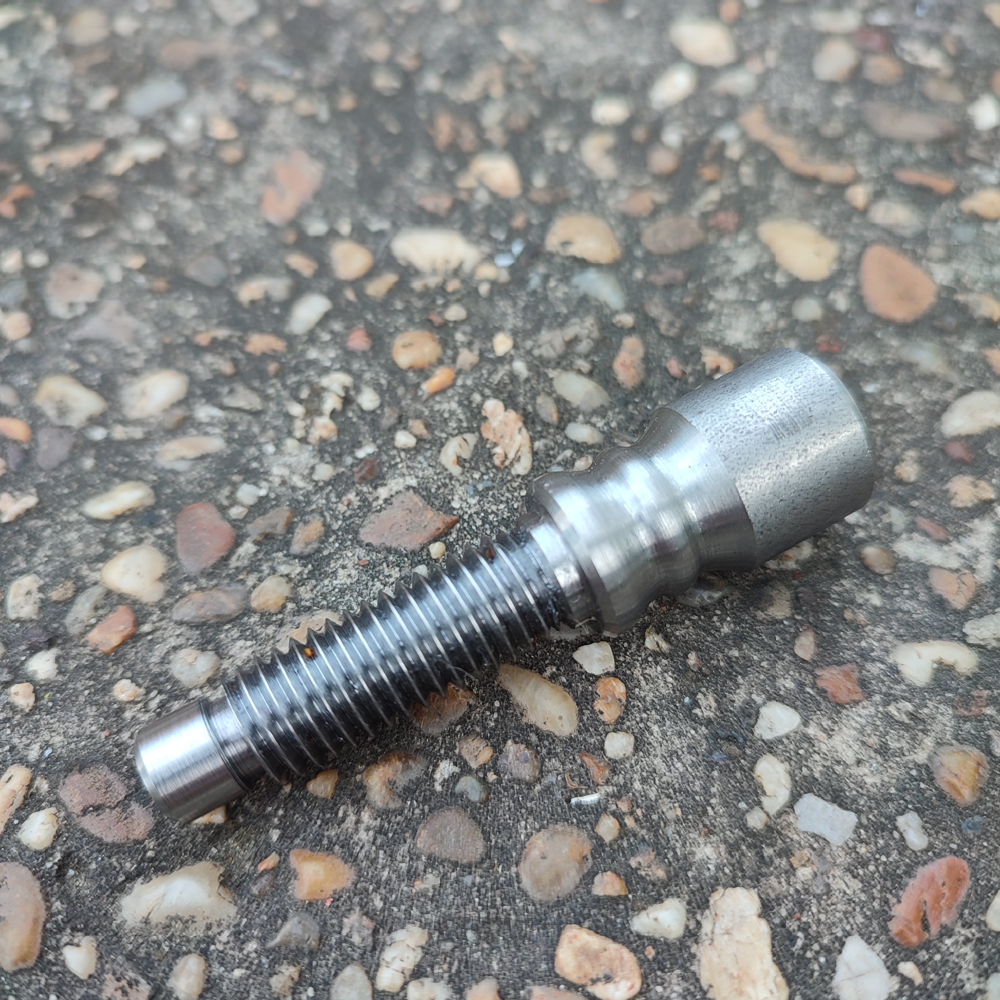
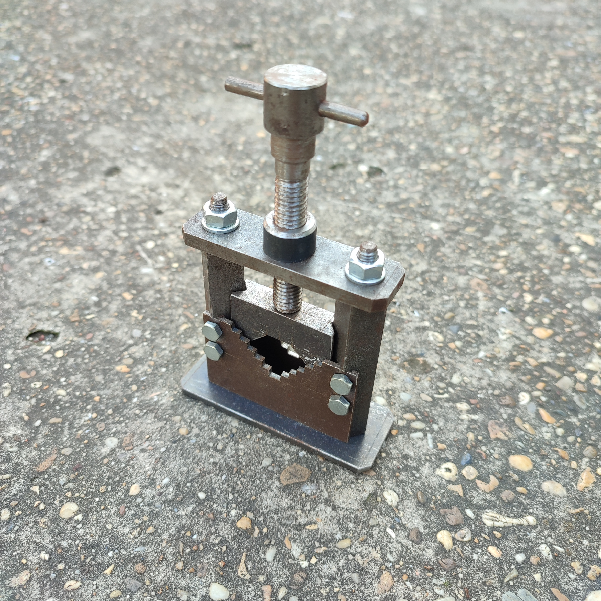
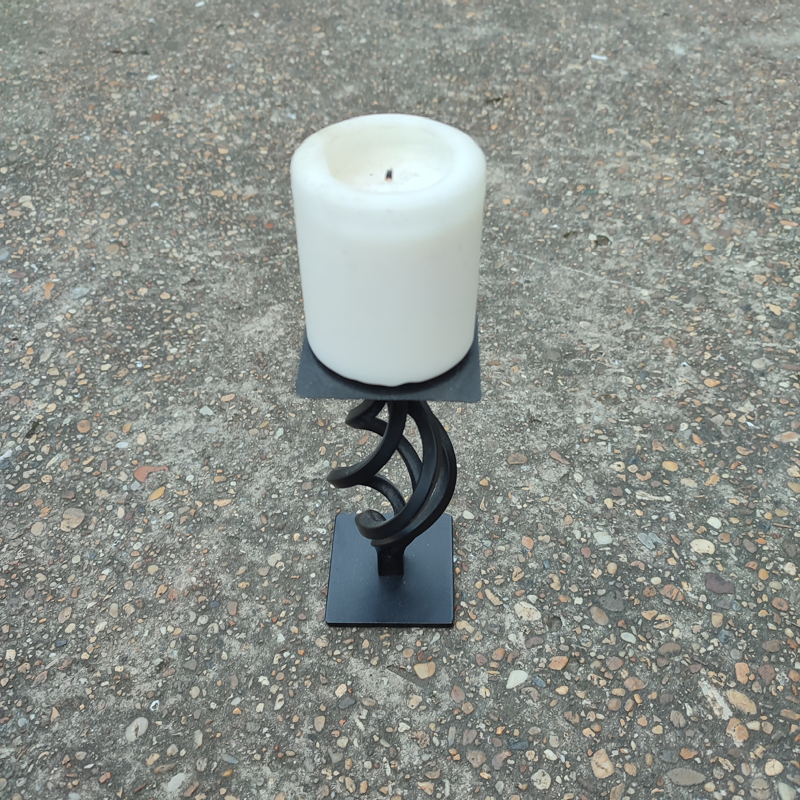

Üdvözöllek a portfólió weboldalamon!
Véletlenszerű felhasználó generátor
Rólam
Murányi Kende Zoltán vagyok, a Budapesti Műszaki és Gazdaságtudományi Egyetem elsőéves ipari termék- és formatervező hallgatója. Ezen a weboldalon keresztül szeretném bemutatni néhány munkámat, melyeket középiskola, illetve technikum alatt készítettem.
Tanulmányaim
- Nagymarosi Kittenberger Kálmán Általános és Művészeti Iskola
- 2018-2023: VSZC Boronkay György Műszaki Technikum és Gimnázium - Gépészet
- 2023-2024: VSZC Boronkay György Műszaki Technikum és Gimnázium - Gépgyártás-technológiai technikus
- 2024- Budapesti Műszaki és Gazdaságtudományi Egyetem - Ipari termék- és formatervezés
Projektek
Néhány munkám melyek a középiskolás, illetve technikusi éveim alatt készültek:
Kisautó

Rajztű

Excenteres szorító

CNC esztergán gyártott menetes munkadarab
Menetes csőszorító satu
Gyertyatartó első modell

Gyertyatartó második modell

Gyertyatartó harmadik modell
Kapcsolat
email: muranyikende@gmail.com